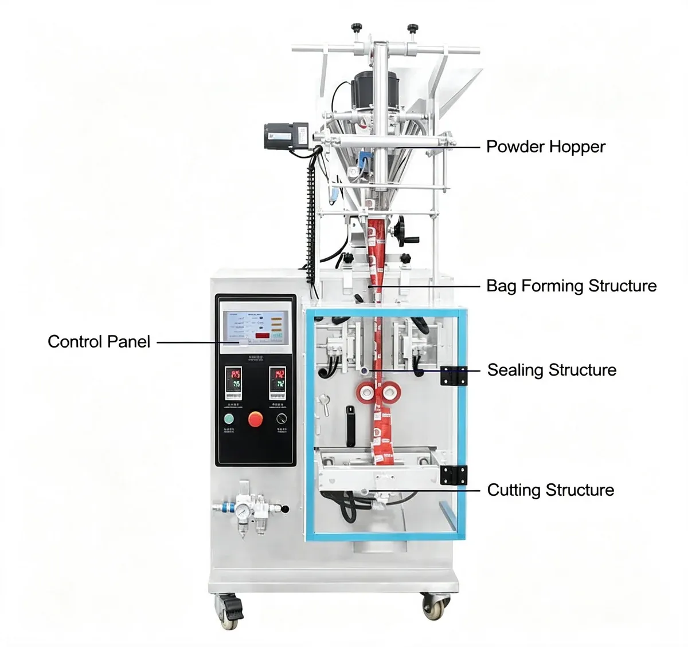
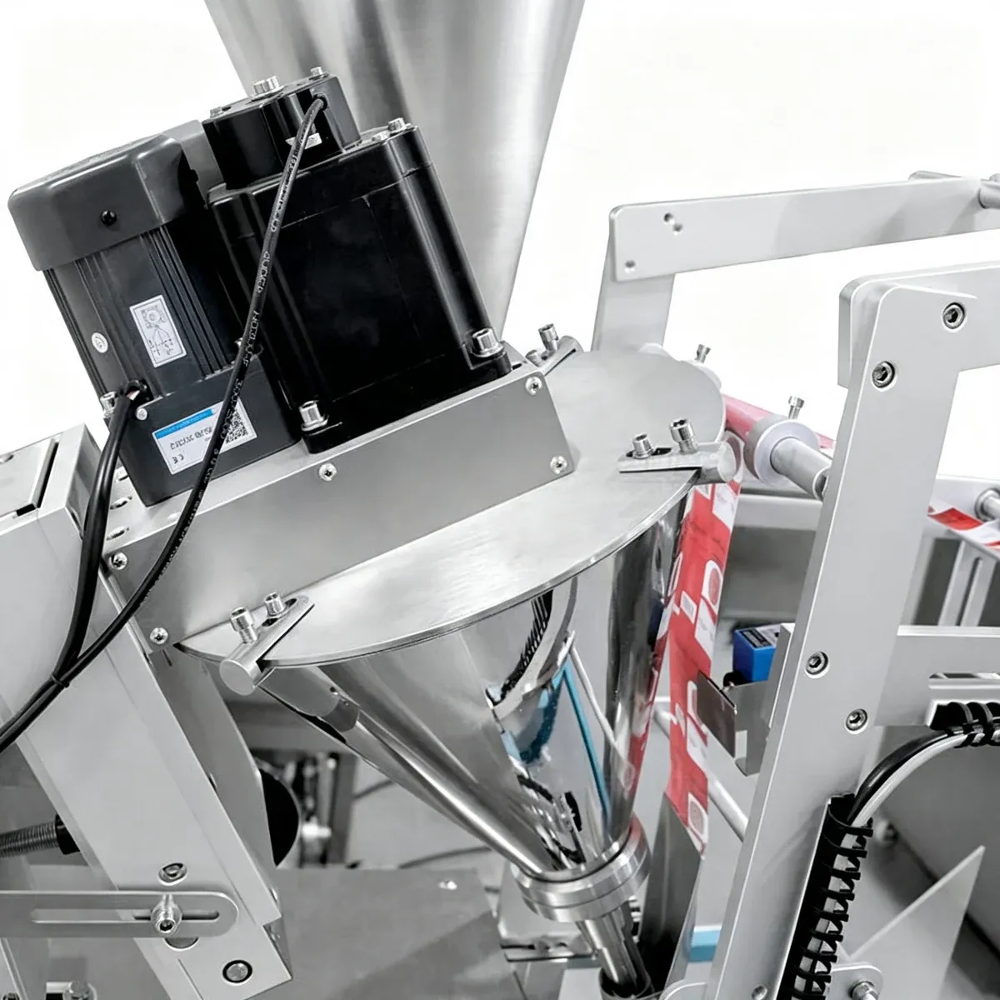
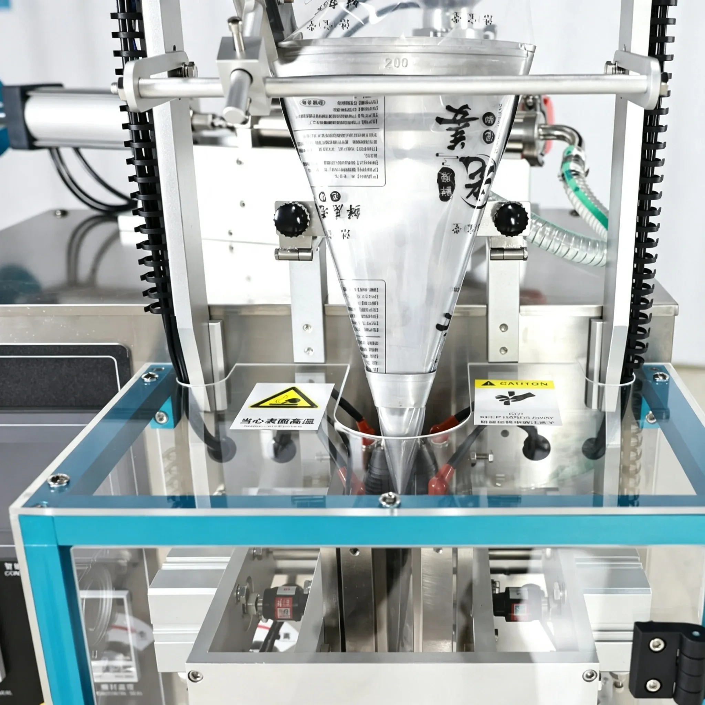
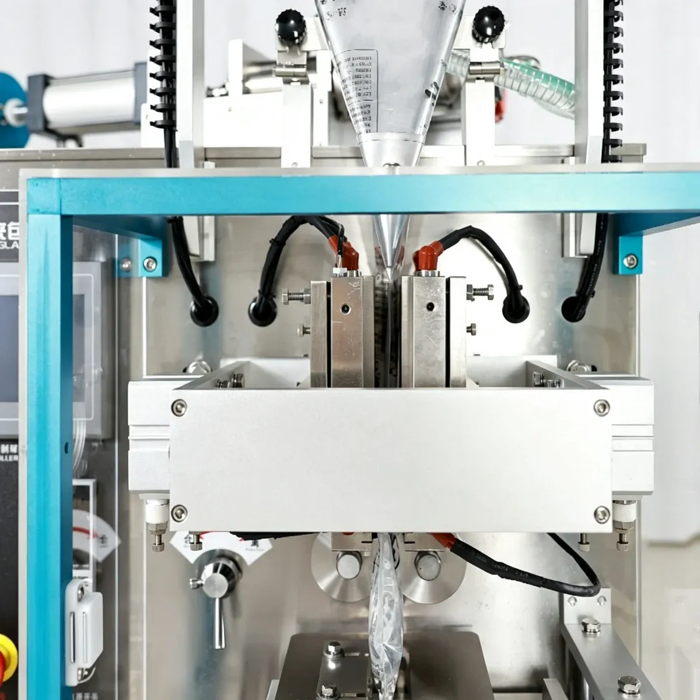
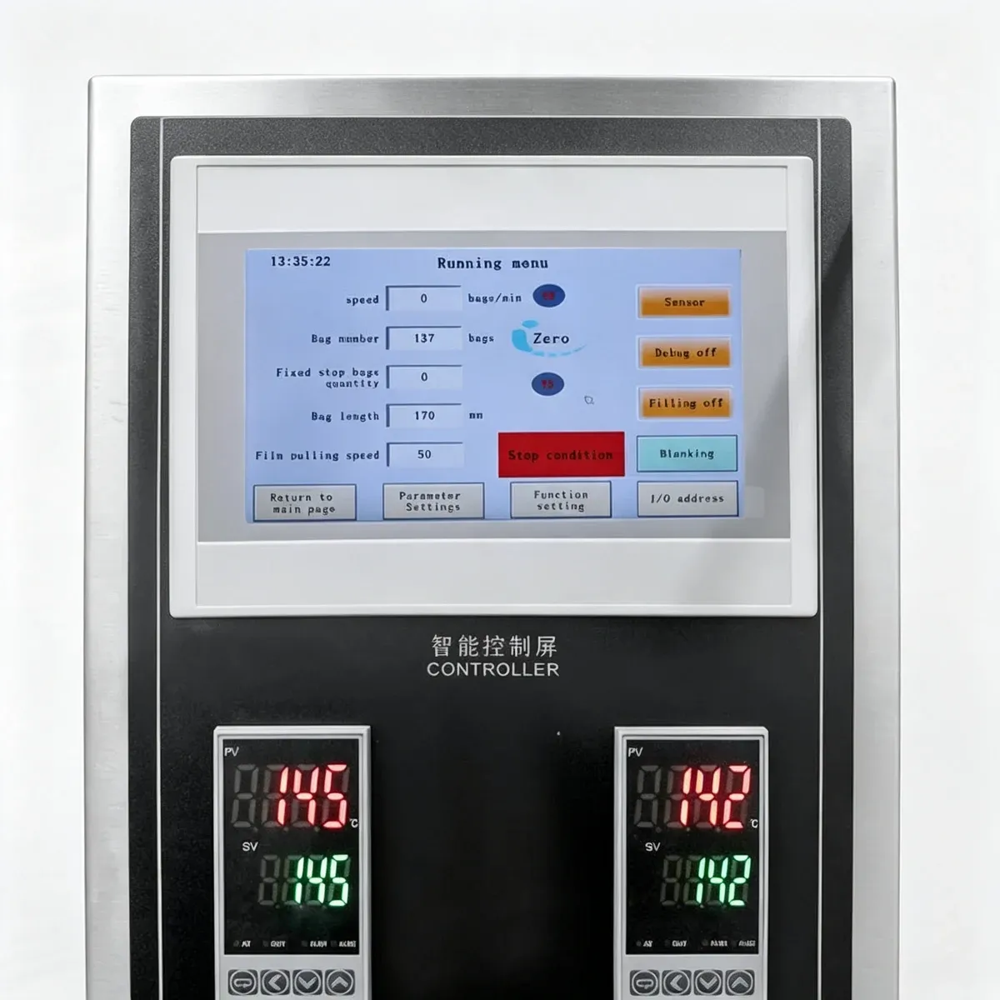

01
Powder Bulk Density
The weight of the powder per unit volume.
VFFS Packaging Machines
Compact Automatic Sachet Packaging Machine for Coffee Powder and Other Fine Powders
Note: Technical specifications are for reference. Actual performance may vary depending on powder properties, filling quantity, bag dimensions and packaging film.
PBF-250
The PBF-250 Automatic Auger Powder VFFS Packing Machine is designed for automatic packaging of small quantities of dry powder into sachets. The machine integrates film feeding, bag forming, auger dosing, powder filling, heat sealing and bag cutting into one continuous packaging process.
It is particularly suitable for coffee powder, instant drink powder and other fine powders that require controlled dosing and compact sachet packaging. The auger dispenses powder according to preset screw revolutions, while the VFFS section forms and seals each package automatically.

Fine powder does not always flow consistently under gravity. Depending on particle size, density and moisture content, powder may bridge, generate dust or discharge unevenly. An auger controls material movement through screw rotation, making it suitable for small-dose powder packaging.
The weight of the powder per unit volume.
How fine or coarse the powder particles are.
How easily the powder flows through the auger.
How much moisture the powder contains.
The size of the screw that moves the powder.
How fast the screw rotates during filling.
The weight each sachet should contain.
Designed for small-dose powder packaging applications. Final machine configuration should be selected according to the powder's bulk density, particle size, flowability, moisture content and target filling weight.
The machine produces sachets automatically from heat-sealable roll film. The sealing style can be customized according to the required package appearance and film structure.
The standard sealing style of the PBF-250.
Available as a customized sealing option.
Available as a customized sealing option.
Coffee powder, instant drink powder, beverage powder, seasoning powder and other compatible food powders.
Suitable dry powdered household or personal-care products.
Can be configured for compatible pharmaceutical powders when the required machine materials and production standards are confirmed.
The auger screw controls powder dispensing. The filling quantity is determined by the preset number of auger rotations, providing controlled dosing for small-volume powder packaging. The outer filling tube works closely with the auger and helps reduce powder leakage during filling.
Bag forming, powder filling, sealing and cutting are completed automatically from roll film. This integrated process reduces manual packaging work and provides continuous production.
The machine is equipped with a touchscreen interface for easier operation and parameter adjustment. Compared with conventional switches and buttons, the touchscreen provides a more intuitive operating interface, and it can be customized according to production requirements.
A photoelectric sensor detects registration marks on printed packaging film. This allows the machine to position printed graphics more accurately before sealing and cutting, helping maintain a consistent finished package appearance.
The sealing temperature can be adjusted through the control system according to different heat-sealable film materials. This helps maintain stable sealing quality when changing packaging films.
The standard machine uses back-side sealing. According to packaging requirements, the machine can also be customized for three-side or four-side sealing, providing greater flexibility for different sachet designs.
With a footprint of approximately 600 × 760 mm, the PBF-250 combines dosing and VFFS packaging functions in a relatively compact design, suitable for production areas where space efficiency is important.
PBF-250
Packaging film is automatically pulled through the bag-forming section and shaped into a sachet. The auger filling system measures the powder according to a preset number of screw rotations and discharges it into the formed bag.
After filling, the machine automatically completes heat sealing and cutting. For printed packaging film, a photoelectric sensor detects the registration mark and helps maintain the correct position of the printed design.

Film feeding, bag forming, auger dosing, powder filling, heat sealing and bag cutting — one continuous packaging process.
Packaging film is automatically pulled through the bag-forming section.
The film is shaped into a sachet.
The auger measures the powder according to preset screw rotations.
The measured powder is discharged into the formed bag.
The machine automatically heat-seals the filled sachet.
Each sealed sachet is cut to size.
The finished sachet leaves the machine.
PBF-250
Packaging film is automatically pulled through the bag-forming section and shaped into a sachet. The machine is designed for compatible heat-sealable packaging films, typically PP- and PET-based materials.
The sealing temperature can be adjusted through the control system according to different heat-sealable film materials, helping maintain stable sealing quality when changing packaging films. Printed roll film can be used together with the photoelectric registration sensor.

PBF-250
After filling, the machine automatically completes heat sealing and cutting. The vertical sealing system and horizontal sealing and cutting unit work together to close each sachet.
The standard machine uses back-side sealing. According to packaging requirements, the machine can also be customized for three-side or four-side sealing.

PBF-250
The machine is equipped with a touchscreen interface for easier machine operation and parameter adjustment. Production parameters can be adjusted through the touchscreen when changing products or bag sizes.
A photoelectric sensor detects registration marks on printed packaging film, allowing the machine to position printed graphics more accurately before sealing and cutting.

The standard operating speed is approximately 10–50 bags/min. Actual production speed depends on the factors below.
How much powder each sachet contains.
Density, particle size and flowability of the powder.
The length and width of each sachet.
Back seal, three-side or four-side seal.
The type and thickness of the roll film.
The operating environment and line setup.
What's included: main VFFS packaging machine, auger filling system, powder hopper, roll-film feeding system, bag forming structure, vertical sealing system, horizontal sealing and cutting unit, touchscreen control panel and photoelectric color-mark sensor.
The machine can be customized for three-side sealing instead of the standard back seal.
The machine can be customized for four-side sealing instead of the standard back seal.
The auger filling configuration can be adjusted according to the powder characteristics and required filling range.
The filling range can be customized for different product requirements.
The bag former can be customized for different bag sizes and shapes.
The control interface can be customized according to production requirements.
PRODUCT VIDEO
Watch the PBF-250 form, fill, seal and cut powder sachets from roll film.
PBF-250
PBF-250
Send us your powder type, filling weight, bag dimensions, packaging film, required speed and local power supply, and we will recommend the right PBF-250 configuration for your product.